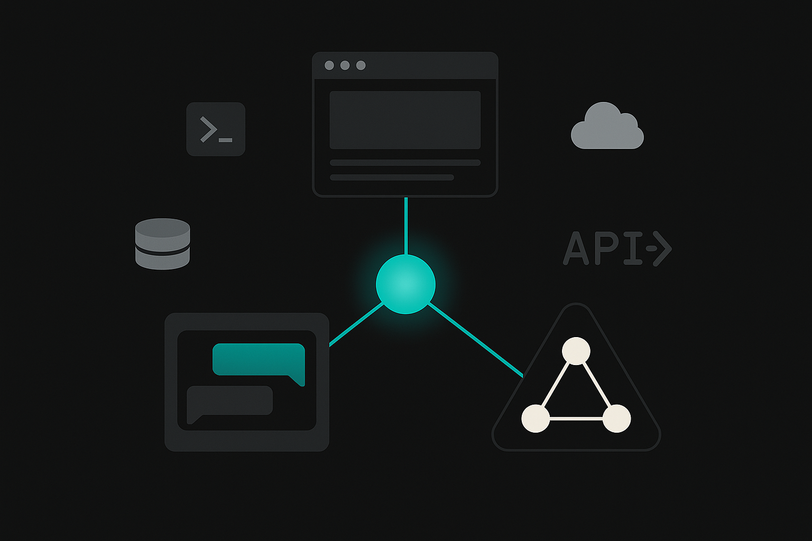

Course 16 / Layer 3 -- 統合マスター
AI駆動開発マスター 統合プロジェクトシリーズ全16コースの集大成。Copilot、Claude Code、Codex、LangGraph、Dify、MCP/A2Aを横断的に活用し、3つのプロダクションレベルプロジェクトを構築する。コンテキストエンジニアリング、チーム開発設計、コスト最適化、ポートフォリオ作成まで。日本語圏にこのレベルの統合コースは存在しない。
上級 約15時間(900分) 11 Sections + 3 Review ハンズオン比率 76% 前提: Layer 1-2の複数コース受講済み

Section 01 -- 60min(講義35 + ハンズオン25)
コンテキストエンジニアリング -- AIへの文脈設計論
コンテキストエンジニアリングとは何か
プロンプトエンジニアリングという言葉はすでに広く知られています。しかし2026年の現場で求められているのは、その上位概念にあたる「コンテキストエンジニアリング」です。プロンプト単体の改善ではなく、AIに渡す文脈全体を構造的に設計する技術を指します。
具体的に言えば、プロンプトの文言だけでなく、設定ファイル(CLAUDE.md、AGENTS.md)、メモリ(過去の会話履歴やプロジェクト知識)、ツール接続(MCP経由の外部サービス)まで含めた「AIが参照する情報のすべて」を設計対象にします。プロンプトはコンテキストの一部にすぎません。
%%{init:{'theme':'dark','themeVariables':{'primaryColor':'#00A5BF','primaryBorderColor':'#007A8F','primaryTextColor':'#e8e8e8','lineColor':'#00A5BF','secondaryColor':'#1a1a1a','background':'#141414','mainBkg':'#1a1a1a','nodeBorder':'#00A5BF'}}}%%
graph TB
subgraph L1["Layer 1: システム指示"]
A["モデルの基本的な振る舞い 4層コンテキストモデル。上位の層ほど永続的で変更頻度が低い
4層それぞれの設計原則
Layer 1: システム指示(ユーザーは通常変更しない)
モデルプロバイダー(Anthropic、OpenAI等)が設定する基盤レイヤーです。安全性や基本的な振る舞いが規定されています。ユーザーが直接触れる部分ではありませんが、この層の存在を意識することで「なぜAIが特定の回答を拒否するのか」を理解できます。
Layer 2: プロジェクト設定(設定ファイル)
開発者が最も丁寧に設計すべき層です。プロジェクトのルート直下に置く設定ファイルがこれにあたります。
ツール 設定ファイル 配置場所 読み込みタイミング
Claude Code CLAUDE.md プロジェクトルート セッション開始時に自動読み込み Codex CLI AGENTS.md プロジェクトルート セッション開始時に自動読み込み GitHub Copilot .github/copilot-instructions.md .github/配下 エディタ起動時 Cursor .cursor/rules/*.mdc .cursor/配下 条件マッチ時
設計のポイントは3つ。「具体的 > 抽象的」が原則で、「テストを書いてください」ではなく「Vitestで各関数に最低2つのテストケースを書いてください」と記述します。禁止事項は理由とセットで書き、「any型を使わないでください。型推論が効かなくなりバグの温床になるため。」のように根拠を添えると効果的です。そして指示はテスト可能にする。「適切なエラーハンドリングをしてください」ではなく「try-catchですべてのAPI呼び出しを囲み、エラー時はconsole.errorでログを出力してください」と書けば、AIの出力を検証できます。
設定ファイル横断対照表(記述例)
同じルール(TypeScript strict / any型禁止)を各ツールのフォーマットでどう記述するか、比較すると構造が見えてきます。
ファイル 対象ツール 記述例(TypeScript strict / any禁止)
CLAUDE.md Claude Code # コーディング規約\n- TypeScript strict mode。any型禁止(型推論が無効化されるため)AGENTS.md Codex CLI # Rules\n- Always use TypeScript strict mode. Never use `any` type..github/copilot-instructions.md GitHub Copilot When generating TypeScript code, always use strict mode. Do not use `any`; prefer `unknown` with type guards..cursor/rules/coding.mdc Cursor ---\nalwaysApply: true\n---\nTypeScript strict mode必須。any型の代わりにunknownとtype guardを使用すること。.claude/settings.json Claude Code(権限) {"permissions": {"allow": ["Bash(npm run *)", "Read", "Write"], "deny": ["Bash(rm -rf *)"]}}
設定ファイルが矛盾している場合の優先順位
チーム開発で複数の設定ファイルが並存すると、記述内容が食い違うことがあります。CLAUDE.mdには「クラス禁止」と書いてあるのに、copilot-instructions.mdには「クラスベースで実装」と残っている、といった状況です。
各ツールは自身の設定ファイルだけを読むため、ツール間の矛盾をAIが自動解消することはありません。CLAUDE.mdはClaude Codeしか読まず、copilot-instructions.mdはCopilotしか読みません。矛盾の解決策はシンプルで、マスターファイルを1つ決め(CLAUDE.mdを推奨)、他のファイルはマスターからAIに変換生成させる運用にする。マスターを更新したら「CLAUDE.mdの内容をAGENTS.mdフォーマットに変換して」と指示し、派生ファイルを再生成します。手動で個別に編集するとドリフトが起きるため、マスター以外は直接編集しないルールを徹底してください。
Layer 3: セッション文脈(メモリ)
Claude Codeの場合、~/.claude/CLAUDE.md(グローバルメモリ)とプロジェクト直下のCLAUDE.mdに自動メモリが蓄積されます。過去の会話で学んだプロジェクト固有の知識がここに残り、次回セッションで自動的に参照されます。Cursorの.cursor/rules/にalways適用ルールを書くのも同じ効果を狙った設計です。
Layer 4: タスク指示(プロンプト)
ユーザーが都度入力する個別の指示です。上位3層が適切に設計されていれば、ここはシンプルで済みます。「ユーザー認証機能を追加して」の一言で、CLAUDE.mdに書かれたプロジェクト規約に従いながら、メモリに保存されたDB設計に基づいて実装が進みます。
Tips: 優れたCLAUDE.mdの共通点
業界で実績のあるCLAUDE.mdを分析すると、300行前後に収まっているものが多い。冗長な指示は逆効果で、AIのコンテキストウィンドウを無駄に消費します。本当に守ってほしいルールだけを書き、例外や補足はdetailsタグ等で折りたたむ設計が効きます。
設計ファイルの記述例: CLAUDE.md(抜粋)
# プロジェクト概要
タスク管理SaaS。Next.js 15 + TypeScript + Supabase。
# コーディング規約
- TypeScript strict mode。any型禁止
- 関数型パターンを優先。クラスは使わない
- コンポーネントはfunction宣言、export名前付き
- Tailwind CSSのみ。styled-components禁止
- 日本語コメント。変数名は英語
# テスト
- Vitestで各関数に最低2テストケース
- E2EはPlaywright。主要フローのみ
# 禁止事項
- console.logをコミットしない(debuggerも同様)
- 環境変数をハードコードしない
- node_modulesを直接編集しないコピー
ハンズオン: 4層コンテキストの設計 25min
目標: 1つのプロジェクトに対して、Layer 2(設定ファイル)とLayer 4(プロンプトテンプレート)を設計する
Step 1: プロジェクト選定(3min)
以下のいずれかを対象プロジェクトとして選んでください。このコースのPJ1-3でも使いますが、ここでは設計練習が目的です。
タスク管理SaaS(Next.js + Supabase)
社内FAQチャットボット(LangGraph + Dify)
営業支援マルチエージェント(MCP + A2A)
Step 2: CLAUDE.mdの作成(10min)
ダウンロード済みの「コンテキストエンジニアリング設計シート.md」を開き、以下の項目を記入してください。
プロジェクト概要(1-2文)
技術スタック
コーディング規約(5項目以上)
テスト方針
禁止事項(理由つきで3項目以上)
以下のプロジェクトのCLAUDE.mdを作成してください。
プロジェクト: [ここにプロジェクト名]
技術スタック: [ここに技術スタック]
開発方針: TypeScript strict, 関数型パターン優先, 日本語コメント
以下の項目を含めてください:
1. プロジェクト概要(2文以内)
2. コーディング規約(5項目以上、具体的に)
3. テスト方針(ツール名と最低カバレッジ指定)
4. 禁止事項(理由つきで3項目以上)
5. Git規約(コミットメッセージフォーマット等)
300行以内に収めてください。コピー
Step 3: AGENTS.mdとcopilot-instructions.mdの作成(7min)
Step 2で作ったCLAUDE.mdを元に、AGENTS.md(Codex CLI用)とcopilot-instructions.md(GitHub Copilot用)を生成してください。
以下のCLAUDE.mdの内容を元に、2つのファイルを作成してください。
[CLAUDE.mdの内容をここに貼り付け]
1. AGENTS.md(Codex CLI用)
- CLAUDE.mdと同じ規約を、Codex CLIが読み取れる形式で
- Codex固有の設定(sandbox permissions等)を追加
2. .github/copilot-instructions.md(GitHub Copilot用)
- コード補完に特化した指示
- import順序、命名規則、型定義の書き方を具体的にコピー
Step 4: プロンプトテンプレートの作成(5min)
Layer 4用のプロンプトテンプレートを3つ作成してください。CLAUDE.mdが適切に設計されていれば、タスク指示は短くなるはずです。
新機能追加用テンプレート(1-2文で済む形)
バグ修正用テンプレート
リファクタリング用テンプレート
CLAUDE.md(300行以内)を作成した
禁止事項に理由を付けた
AGENTS.mdを作成した
copilot-instructions.mdを作成した
プロンプトテンプレートを3つ作成した
Section 02 -- 60min(講義30 + ハンズオン30)
AI開発環境の最適構成 -- ツール横断ワークフロー
ツール横断の基本戦略
AI駆動開発のツールは1つに絞るものではありません。それぞれの得意領域が異なるため、場面に応じて使い分けるのが合理的です。「全部Claude Codeで」や「全部Copilotで」は、ハンマーしか持っていない人がすべての問題を釘に見立てるのと同じ発想になります。
%%{init:{'theme':'dark','themeVariables':{'primaryColor':'#00A5BF','primaryBorderColor':'#007A8F','primaryTextColor':'#e8e8e8','lineColor':'#00A5BF','secondaryColor':'#1a1a1a','background':'#141414','mainBkg':'#1a1a1a','nodeBorder':'#00A5BF'}}}%%
flowchart LR
subgraph IDE["IDE作業"]
A["GitHub Copilot 開発フローと各ツールの担当範囲。矢印は主要な連携方向
各ツールの担当範囲
GitHub Copilot
日常のコーディングに最適。インライン補完、Copilot Chat、Copilot Editsの3機能を軸に、IDE内で完結する作業を担当します。1ファイル内の修正、関数の追加、型定義の作成といった粒度の細かい作業が得意。
インライン補完: Tab受け入れ Chat: 設計相談、コードレビュー Edits: 複数ファイルの一括変更 Claude Code / Codex
ターミナルから大規模な変更を指示する場面で威力を発揮します。プロジェクト全体を読み込み、複数ファイルの同時変更、テスト生成、リファクタリングを一気に実行できます。
プロジェクト初期構築 大規模リファクタリング テスト一括生成 CI/CD設定 Dify
ノーコードでAIワークフローを構築。RAGパイプライン、チャットボット、分類器などをGUIで組み立て、APIとして公開できます。非エンジニアとの協業や、プロトタイプの高速検証に向いています。
RAGチャットボット 文書分類ワークフロー APIエンドポイント公開 MCP / A2A
AIエージェントと外部サービスの接続レイヤーです。MCPはツール接続(DB、API、ファイルシステム)、A2Aはエージェント間通信のプロトコル。複数エージェントの協調動作を実現します。
環境統一設定: 1リポジトリに全ツールの設定を配置
チーム開発では各メンバーが好みのツールを使います。それでもコード品質を統一するために、リポジトリに全ツールの設定ファイルを揃えます。
project-root/
CLAUDE.md # Claude Code用
AGENTS.md # Codex CLI / 汎用エージェント用
.github/
copilot-instructions.md # GitHub Copilot用
instructions/
coding-standards.instructions.md
agents/
code-reviewer.yml
.cursor/
rules/
coding.mdc # Cursor用
mcp.json
.claude/
settings.json # Claude Code設定
.mcp.json # MCP接続設定(共通)
.codex/
config.toml # Codex CLI設定コピー
環境セットアップ コマンド一覧
このコースで使う主要ツールのインストールと初期設定を一括で行うコマンドです。macOSを前提としていますが、Windowsの場合はwingetやscoopで代替してください。
# --- Claude Code ---
npm install -g @anthropic-ai/claude-code
# インストール確認
claude --version
# プロジェクトで初期化(CLAUDE.mdの自動生成)
cd your-project && claude /init
# --- Codex CLI ---
npm install -g @openai/codex
# インストール確認
codex --version
# --- GitHub Copilot (VS Code拡張) ---
code --install-extension GitHub.copilot
code --install-extension GitHub.copilot-chat
# --- Cursor IDE ---
# https://cursor.com/ からインストーラーをダウンロード
# インストール後、Settings > Models でAPIキーを設定
# --- MCP接続設定(Claude Code用) ---
# プロジェクトルートに .mcp.json を配置
cat > .mcp.json << 'MCPEOF'
{
"mcpServers": {
"filesystem": {
"command": "npx",
"args": ["-y", "@anthropic-ai/mcp-filesystem", "/path/to/allowed/dir"]
}
}
}
MCPEOF
# --- 全ツール設定ファイルの一括生成(Claude Codeを使う場合) ---
# Claude Codeに以下を指示すると、CLAUDE.mdから派生ファイルを自動生成できます
# 「CLAUDE.mdの規約をもとに、AGENTS.md、copilot-instructions.md、.cursor/rules/coding.mdcを生成して」コピー
注意: 設定ファイルの同期
CLAUDE.md、AGENTS.md、copilot-instructions.mdに同じルールを3回書くのは保守の地獄です。1つのソース(例: CLAUDE.md)をマスターにして、他のファイルはAIに「CLAUDE.mdと同じルールを[ツール名]のフォーマットに変換して」と生成させるのが実務的な解決策です。
ハンズオン: 統合開発環境のセットアップ 30min
目標: 1つのリポジトリに全ツールの設定ファイルを配置し、動作確認する
Step 1: リポジトリの初期化(5min)
mkdir -p pj1-task-saas && cd pj1-task-saas
git init
mkdir -p .github/instructions .github/agents .cursor/rules .claude .codexコピー
Step 2: CLAUDE.mdの配置(5min)
Section 01で作成したCLAUDE.mdをプロジェクトルートに配置してください。未作成の場合はClaude Codeで生成します。
このプロジェクトはタスク管理SaaSです。Next.js 15 + TypeScript + Supabaseで構築します。
CLAUDE.mdを作成してください。以下の方針で:
- TypeScript strict mode
- 関数型パターン優先
- Tailwind CSS v4
- Vitestでテスト
- 日本語コメント、英語変数名コピー
Step 3: 全ツール設定ファイルの生成(10min)
プロジェクトルートのCLAUDE.mdを読み込み、以下の4つの設定ファイルを生成してください。
CLAUDE.mdの内容と整合性を保つこと。
1. AGENTS.md -- Codex CLI用。CLAUDE.mdと同等の規約 + sandbox設定
2. .github/copilot-instructions.md -- Copilot用。コード補完に特化した指示
3. .cursor/rules/coding.mdc -- Cursor用。alwaysApplyルール
4. .mcp.json -- MCP接続設定のスケルトン(filesystem + supabase)コピー
Step 4: 動作確認(10min)
Claude Codeでプロジェクトを開き、CLAUDE.mdが読み込まれていることを確認
VS CodeでCopilotの補完が出ることを確認
小さな関数を書いて、各ツールの挙動が設定ファイルに従っているか検証
CLAUDE.mdをプロジェクトルートに配置した
AGENTS.mdを作成した
copilot-instructions.mdを作成した
Cursorルールを作成した
.mcp.jsonのスケルトンを配置した
Claude Codeで設定が読み込まれることを確認した
Section 03 -- 60min(講義20 + ハンズオン40)
PJ1準備: SaaS型Webアプリの要件定義と設計
プロジェクト概要
PJ1はタスク管理SaaSアプリです。技術スタックはNext.js 15 + TypeScript + Supabase + Tailwind CSS。認証、CRUD、リアルタイム通知、デプロイまでを含むフルスタック構成で、仕様駆動開発の型で進めます。
このプロジェクトを通じて「AIと協働する要件定義」の進め方を体得してください。ゼロから人間が仕様書を書くのではなく、AIに叩き台を出させて人間が判断・修正するフローです。
AIと協働する要件定義
従来の要件定義では人間が仕様書を書き、実装者に渡していました。AI駆動開発では「AIに要件の叩き台を出力させ、人間がレビューして確定する」というフローに変わります。AIは見落としがちな非機能要件やエッジケースの洗い出しが得意で、人間はビジネス判断とスコープの確定に集中できます。
ハンズオン: PJ1の要件定義と設計 40min
目標: AIと協働でタスク管理SaaSの要件定義書、画面設計、DB設計を完成させる
Step 1: 要件定義の叩き台生成(10min)
タスク管理SaaSアプリの要件定義書を作成してください。
技術スタック: Next.js 15 + TypeScript + Supabase + Tailwind CSS v4
デプロイ: Vercel
機能要件:
- メール/パスワード認証(Supabase Auth)
- ダッシュボード(タスク一覧、統計)
- タスクCRUD(作成・読取・更新・削除)
- ステータス管理(未着手/進行中/完了)
- 優先度(高/中/低)
- 期限設定とアラート
- 検索・フィルタ
- リアルタイム通知(Supabase Realtime)
非機能要件も含めてください:
- レスポンス200ms以内
- 同時接続100ユーザー
- データバックアップ戦略
- アクセシビリティ(WCAG 2.1 AA)
出力形式: Markdownの構造化ドキュメントコピー
Step 2: 画面設計(10min)
要件定義に基づいて、以下の画面のワイヤーフレームをテキストで記述してください。
1. ログイン画面
2. ダッシュボード(タスク一覧 + 統計サマリー)
3. タスク作成/編集モーダル
4. タスク詳細ビュー
各画面について:
- 配置する要素を列挙
- ユーザーフロー(画面遷移)をmermaid図で表現
- レスポンシブ対応の方針(モバイルファースト)コピー
Step 3: DB設計(10min)
タスク管理SaaSのSupabase DB設計を作成してください。
テーブル:
- users(Supabase Auth連携)
- tasks
- notifications
- activity_logs
以下を含めてください:
- CREATE TABLE文(SQL)
- RLS(Row Level Security)ポリシー
- インデックス設計
- ER図(mermaid erDiagram)
Supabaseのベストプラクティスに従ってください。コピー
Step 4: CLAUDE.mdの確定(10min)
要件定義、画面設計、DB設計の結果を踏まえてCLAUDE.mdを最終調整してください。仕様駆動開発では、CLAUDE.mdに「何を作るか」と「どう作るか」の両方を書いておくと、以降の実装が格段にスムーズになります。
要件定義書の叩き台をAIに生成させた
人間の目でスコープと優先度を確定した
画面設計(テキストワイヤーフレーム)を作成した
DB設計(SQL + ER図)を作成した
CLAUDE.mdを最終調整した
Section 04 -- 120min(講義10 + ハンズオン110)
PJ1実装: 仕様駆動でフルスタック実装
仕様駆動開発の実践
仕様駆動開発(Spec-Driven Development)では、先にテストと仕様を定義してから実装に入ります。AIにとっては「何を満たせばよいか」が明確になるため、的外れな実装が激減します。人間にとっても、AIの出力をテスト結果で客観的に評価できるので手戻りが少ない。
ここからは10ステップに分けて実装を進めます。各ステップのプロンプトをClaude Code(またはCopilot)に投入し、出力を確認しながら前に進んでください。
ハンズオン: PJ1フルスタック実装(10ステップ) 110min
目標: タスク管理SaaSをNext.js + Supabaseでプロダクションレベルまで実装する
プロジェクト初期化コマンド(Next.js + Supabase + Tailwind CSS)
Step 1に入る前に、ローカル環境でプロジェクトの骨格を作っておくと、Claude Codeへの指示がスムーズになります。以下のコマンドでNext.js + Supabase + Tailwind CSSの初期構成が整います。
# Next.js 15 プロジェクト作成(TypeScript + Tailwind CSS + App Router)
npx create-next-app@latest pj1-task-saas \
--typescript --tailwind --eslint --app --src-dir \
--import-alias "@/*" --use-npm
cd pj1-task-saas
# Supabase クライアントライブラリ
npm install @supabase/supabase-js @supabase/ssr
# Supabase CLI(マイグレーション管理用)
npm install -D supabase
# フォームバリデーション
npm install zod
# テスト環境
npm install -D vitest @testing-library/react @testing-library/jest-dom jsdom
# 環境変数テンプレート作成
cat > .env.local.example << 'EOF'
NEXT_PUBLIC_SUPABASE_URL=
NEXT_PUBLIC_SUPABASE_ANON_KEY=
SUPABASE_SERVICE_ROLE_KEY=
EOFコピー
認証(Supabase Auth)の実装手順 概要
PJ1ではSupabase Authを使ってメール/パスワード認証を実装します。全体の流れは4段階です。
Supabaseダッシュボードで Authentication > Providers からEmail認証を有効化。確認メールのテンプレートはデフォルトのままで問題ありません
lib/supabase/client.ts(ブラウザ用)と lib/supabase/server.ts(Server Component用)の2ファイルにSupabaseクライアントを初期化。@supabase/ssrのcreateBrowserClientとcreateServerClientを使い分けます
middleware.tsでセッション検証を行い、未認証ユーザーを/loginにリダイレクト。getUser()でセッションの存在確認をし、/login と /signup と /auth/callback はリダイレクト対象から除外します
各画面(/login, /signup)はServer Actionでsignup/signinを呼び出す構成にします。成功時はredirect('/dashboard')、失敗時はエラーメッセージを表示。OAuth(Google/GitHub)を追加する場合はSupabaseダッシュボードでプロバイダーを有効化し、callbackハンドラーを/auth/callback/routeに配置するだけで拡張できます
Step 1: プロジェクト初期化(10min)
Next.js 15のプロジェクトを初期化してください。
要件:
- TypeScript strict mode
- Tailwind CSS v4
- src/ディレクトリ構成(App Router)
- ESLint + Prettier設定
- Vitest + Testing Library設定
- .env.local.example(Supabase用の空テンプレート)
初期化後、package.jsonのscriptsにdev/build/test/lintを確認してください。コピー
Step 2: Supabase接続とDB構築(10min)
Supabaseプロジェクトとの接続を設定し、Section 03で設計したDBスキーマを適用してください。
実装:
- lib/supabase/client.ts(ブラウザ用)
- lib/supabase/server.ts(サーバー用)
- supabase/migrations/001_initial_schema.sql
- RLSポリシーの適用
- 型生成(supabase gen types typescript)
.env.localにSUPABASE_URLとSUPABASE_ANON_KEYを設定する手順も示してください。コピー
Step 3: 認証機能(15min)
Supabase Authを使った認証機能を実装してください。
画面:
- /login -- メール/パスワードログイン
- /signup -- 新規登録
- /auth/callback -- OAuth callback
実装:
- ミドルウェアで未認証ユーザーをリダイレクト
- Server Componentでセッション取得
- ログアウト機能
- エラーハンドリング(不正な認証情報、ネットワークエラー)
テスト:
- 認証フローのユニットテスト(モック使用)コピー
Step 4: ダッシュボード(10min)
認証済みユーザーのダッシュボードページを実装してください。
/dashboard:
- 統計サマリー(全タスク数、未着手、進行中、完了、期限切れ)
- タスク一覧(テーブル形式、ソート可能)
- クイック作成ボタン
- Server Componentでデータ取得
- Suspenseでローディング表示
Tailwind CSSでレスポンシブ対応してください。コピー
Step 5: タスクCRUD(15min)
タスクのCRUD操作を実装してください。
機能:
- タスク作成(モーダル形式)
- タスク詳細表示
- タスク編集(インライン or モーダル)
- タスク削除(確認ダイアログ付き)
- ステータス変更(ドラッグ&ドロップ or ボタン)
Server Actions使用。Optimistic Updatesで体感速度を向上させてください。
バリデーションはZodスキーマで。
テスト:
- 各CRUD操作のユニットテストコピー
Step 6: 検索とフィルタ(10min)
タスク一覧に検索とフィルタ機能を追加してください。
機能:
- テキスト検索(タイトル、説明文)
- ステータスフィルタ(複数選択可)
- 優先度フィルタ
- 期限でのソート(昇順/降順)
- URLクエリパラメータでフィルタ状態を保持
debounce(300ms)で検索入力を最適化してください。コピー
Step 7: リアルタイム通知(10min)
Supabase Realtimeを使ったリアルタイム通知を実装してください。
通知トリガー:
- タスクの期限が24時間以内
- タスクのステータスが変更された
- 新規タスクが追加された
UI:
- 画面右上に通知ベルアイコン + 未読数バッジ
- クリックで通知ドロップダウン表示
- 各通知に「既読にする」ボタン
Supabase Realtimeのsubscriptionはクライアントコンポーネントで管理してください。コピー
Step 8: テスト(15min)
プロジェクト全体のテストを整備してください。
Vitest:
- 全Server Actionsのユニットテスト
- ユーティリティ関数のテスト
- Zodスキーマのバリデーションテスト
Playwright(E2E):
- ログイン→ダッシュボード表示フロー
- タスク作成→編集→削除フロー
- 検索・フィルタフロー
カバレッジ80%以上を目指してください。コピー
Step 9: CI/CD設定(5min)
GitHub ActionsでCI/CDパイプラインを設定してください。
CI(PRごと):
- lint
- 型チェック(tsc --noEmit)
- ユニットテスト
- ビルド確認
CD(mainマージ時):
- Vercelへ自動デプロイ
.github/workflows/ci.yml を作成してください。コピー
Step 10: Vercelデプロイ(10min)
Vercelへのデプロイ設定を確認し、本番環境を構築してください。
確認項目:
- 環境変数の設定(SUPABASE_URL, SUPABASE_ANON_KEY)
- ビルド成功確認
- 本番URLでの動作確認
- OGPメタデータの設定
- robots.txt / sitemap.xml
問題があれば修正してください。コピー
Next.jsプロジェクトを初期化した
Supabase接続とDB構築を完了した
認証機能が動作する
ダッシュボードが表示される
タスクのCRUDが動作する
検索・フィルタが機能する
リアルタイム通知が動作する
テストが80%以上のカバレッジで通過する
CI/CDパイプラインが動作する
Vercelにデプロイされ、本番URLでアクセス可能
Review A -- 30min
復習A: PJ1コードレビューと改善
PJ1の実装を振り返り、品質を引き上げます。AIにコードレビューを依頼し、指摘された問題を修正する一連のフローを体験してください。
ハンズオン: AIコードレビュー 30min
目標: PJ1のコードをAIにレビューさせ、3つ以上の改善を実施する
Step 1: コードレビュー依頼(10min)
プロジェクト全体のコードレビューを実施してください。
以下の観点でレビューしてください:
1. TypeScript: 型安全性、any/unknownの不適切な使用
2. セキュリティ: RLSポリシーの抜け、XSS/CSRF対策
3. パフォーマンス: 不要な再レンダリング、N+1クエリ
4. アクセシビリティ: ARIA属性、キーボード操作
5. エラーハンドリング: 未処理のPromise、エラー境界
各問題に対して:
- 該当ファイルと行番号
- 問題の説明
- 修正案(コード付き)
を出力してください。コピー
Step 2: 改善実施(15min)
レビュー結果から優先度の高い問題を3つ以上選び、修正してください。
Step 3: 改善確認(5min)
テストを再実行し、修正がリグレッションを起こしていないことを確認してください。
AIにコードレビューを依頼した
レビュー結果を確認し、優先度をつけた
3つ以上の問題を修正した
テストが通ることを確認した
Section 05 -- 60min(講義20 + ハンズオン40)
PJ2準備: RAGチャットボットの設計
プロジェクト概要
PJ2は社内ドキュメントFAQボットです。LangGraphでSelf-RAGパイプラインを構築し、Difyでノーコードワークフローとして統合、Slack連携で社内展開する構成になります。PJ1がフロントエンド中心だったのに対し、PJ2はバックエンドとAIパイプラインに軸足を置きます。
RAGアーキテクチャの全体像
%%{init:{'theme':'dark','themeVariables':{'primaryColor':'#00A5BF','primaryBorderColor':'#007A8F','primaryTextColor':'#e8e8e8','lineColor':'#00A5BF','secondaryColor':'#1a1a1a','background':'#141414','mainBkg':'#1a1a1a','nodeBorder':'#00A5BF'}}}%%
flowchart TB
A["ユーザー質問 Self-RAGフロー。検索結果の関連性と回答の事実整合性を自己検証する
データソースとチャンク戦略
RAGの精度はチャンク設計で8割決まります。大きすぎるチャンクはノイズが増え、小さすぎるチャンクは文脈が欠落する。512〜1024トークン、オーバーラップ20%が実務的な出発点です。ただしこれは万能ではなく、ドキュメントの性質によって調整が必要です。
ドキュメント種別 推奨チャンクサイズ オーバーラップ 理由
社内マニュアル(手順書) 512トークン 20% 手順ごとの区切りが明確 FAQ集 Q&Aペアごと 不要 1問1答が自己完結 契約書/規程 1024トークン 30% 条項間の参照関係が多い 技術ドキュメント 見出し単位 15% Markdownの構造を活かす
ハンズオン: PJ2の設計 40min
目標: RAGチャットボットのアーキテクチャ設計、データ戦略、Difyワークフロー設計を完成させる
Step 1: アーキテクチャ設計(10min)
社内ドキュメントFAQボットのアーキテクチャ設計書を作成してください。
技術スタック:
- LangGraph(Self-RAGパイプライン)
- LangChain(ドキュメントローダー、ベクトルストア)
- OpenAI Embeddings(text-embedding-3-small)
- Chroma or Supabase pgvector(ベクトルDB)
- Dify(ワークフロー統合)
- Slack API(Bot連携)
- LangSmith(監視)
以下を含めてください:
- システム構成図(mermaid)
- データフロー
- 各コンポーネントの責務
- エラーハンドリング戦略コピー
Step 2: チャンク戦略の設計(10min)
以下の3種類のドキュメントに対するチャンク戦略を設計してください。
ドキュメント:
1. 社内ITマニュアル(PDF, 50ページ)
2. FAQ集(Markdown, 200問)
3. 社内規程集(PDF, 100ページ)
各ドキュメントについて:
- ローダー選択(PyPDFLoader / MarkdownLoader等)
- チャンク分割戦略(サイズ、オーバーラップ、分割単位)
- メタデータ設計(ソース名、ページ番号、カテゴリ)
- 前処理(クリーニング、正規化)コピー
Step 3: LangGraphのノード設計(10min)
LangGraphでSelf-RAGパイプラインを構築する際のノード設計をしてください。
ノード:
1. query_analyzer -- 質問の意図分類と前処理
2. retriever -- ベクトル検索で関連文書を取得
3. relevance_checker -- 取得文書の関連性を判定
4. generator -- 回答を生成
5. hallucination_checker -- ハルシネーションを検出
6. query_rewriter -- 検索クエリを書き換えて再検索
各ノードのStateスキーマ、入出力、条件分岐ロジックを定義してください。
mermaid stateDiagramで全体フローを図示してください。コピー
Step 4: Difyワークフロー設計(10min)
Difyのワークフローとして上記のRAGパイプラインをどう統合するか設計してください。Difyの「ワークフロー」ノードでLangGraphのAPIを呼び出す構成が現実的です。
アーキテクチャ設計書を作成した
3種類のドキュメントのチャンク戦略を決定した
LangGraphのノード設計を完了した
Difyワークフローの設計を完了した
Section 06 -- 120min(講義10 + ハンズオン110)
PJ2実装: LangGraph + Dify + Slack連携
実装の進め方
PJ1と同様に10ステップで進めます。PJ2ではPythonがメイン言語になります。Claude Codeはターミナルから大規模なPythonプロジェクトの構築にも対応しているので、TypeScriptと同じ感覚で進めてください。
ハンズオン: PJ2フルスタック実装(10ステップ) 110min
目標: Self-RAGチャットボットを構築し、Dify + Slack連携でデプロイする
Step 1: ナレッジベース構築(15min)
RAGチャットボットのナレッジベースを構築してください。
Pythonプロジェクト構成:
pj2-rag-chatbot/
src/
ingestion/ -- ドキュメント取り込み
retrieval/ -- ベクトル検索
generation/ -- 回答生成
graph/ -- LangGraphパイプライン
api/ -- FastAPIエンドポイント
data/
documents/ -- 生ドキュメント
tests/
.env.example
requirements.txt
CLAUDE.md
Step 1ではsrc/ingestion/を実装:
- PDFローダー(PyPDFLoader)
- Markdownローダー
- チャンク分割(Section 05で設計した戦略)
- Chromaベクトルストアへの格納
- OpenAI Embeddingsの設定
サンプルドキュメント(data/documents/)も3つ作成してください。コピー
Step 2: LangChain RAGパイプライン(10min)
基本的なRAGパイプラインをLangChainで実装してください。
src/retrieval/retriever.py:
- Chromaからベクトル検索(k=5)
- MMR(Maximal Marginal Relevance)で多様性確保
- メタデータフィルタ対応
src/generation/generator.py:
- ChatOpenAI(gpt-4o-mini)で回答生成
- プロンプトテンプレート(ソース引用を必須にする)
- ストリーミング対応コピー
Step 3: LangGraph Self-RAG(15min)
LangGraphでSelf-RAGパイプラインを実装してください。
src/graph/self_rag.py:
Section 05で設計した6ノードを実装:
1. query_analyzer -- 質問意図の分類
2. retriever -- ベクトル検索
3. relevance_checker -- 取得文書の関連性スコアリング(閾値0.7)
4. generator -- 回答生成
5. hallucination_checker -- 事実整合性チェック
6. query_rewriter -- 検索クエリ書き換え(最大3回リトライ)
StateGraphで接続し、条件分岐をadd_conditional_edgesで定義してください。
グラフの可視化(graph.get_graph().draw_mermaid())も出力してください。コピー
Step 4: Difyワークフロー構築(15min)
DifyでRAGチャットボットのワークフローを構築する手順を示してください。
構成:
- Difyのワークフロータイプ: Chatflow
- 入力: ユーザーの質問
- HTTP Request ノード: LangGraph Self-RAGのAPIを呼び出し
- 回答整形ノード: ソース引用付きで回答をフォーマット
- 出力: 整形された回答
Dify DSLのエクスポート形式(YAML)で構成を記述してください。
FastAPIのエンドポイント(src/api/main.py)も実装してください。コピー
Step 5: Slack連携(10min)
Slack Botを構築し、DifyワークフローをSlackから呼び出せるようにしてください。
実装:
- Slack Bolt(Python)でBot構築
- メンション(@bot)でトリガー
- スレッド返信で回答
- ソース引用はブロックキットで表示
- タイピングインジケーター表示
src/slack/bot.py として実装してください。コピー
Step 6: テスト(10min)
PJ2のテストを整備してください。
pytest:
- 各ノードの単体テスト(モック使用)
- Self-RAGグラフの結合テスト
- APIエンドポイントのテスト(TestClient)
- チャンク分割のテスト(期待されるチャンク数、メタデータ)
conftest.pyに共通フィクスチャを定義してください。コピー
Step 7: 精度チューニング(10min)
RAGの回答精度を向上させるチューニングを実施してください。
チューニング項目:
1. チャンクサイズの調整(512→768→1024で比較)
2. 検索k値の調整(3→5→10で比較)
3. 関連性スコアの閾値調整
4. プロンプトテンプレートの改善
5. リランキング(Cross-Encoder)の導入
評価指標:
- 回答正確性(人間評価10問)
- ソース引用の適切性
- ハルシネーション率
結果を表形式でまとめてください。コピー
LangSmithでのRAG評価セットアップ
精度チューニングの前に、LangSmithで評価基盤を整えておくと改善のサイクルが回しやすくなります。テストケースを登録し、チューニング前後の精度を数値で比較する仕組みです。
from langsmith import Client
from langsmith.evaluation import evaluate
# LangSmithクライアント初期化
client = Client()
# --- テストケース(データセット)の登録 ---
dataset_name = "pj2-rag-evaluation"
dataset = client.create_dataset(dataset_name, description="RAG精度評価用テストケース")
# テストケースを登録(質問 + 期待される回答 + 根拠ソース)
test_cases = [
{
"inputs": {"question": "有給休暇の申請方法を教えてください"},
"outputs": {
"answer": "社内ポータルの申請フォームから上長承認フローで申請します",
"source": "就業規則_v3.pdf"
}
},
{
"inputs": {"question": "リモートワークの上限日数は?"},
"outputs": {
"answer": "週3日までリモートワークが可能です",
"source": "リモートワーク規定.pdf"
}
},
{
"inputs": {"question": "出張旅費の精算期限はいつまでですか?"},
"outputs": {
"answer": "出張終了後2週間以内に経費精算システムで申請してください",
"source": "経費精算マニュアル.pdf"
}
},
]
for case in test_cases:
client.create_example(
inputs=case["inputs"],
outputs=case["outputs"],
dataset_id=dataset.id
)
# --- 自動評価の実行 ---
# RAGパイプラインを関数として定義
def rag_pipeline(inputs: dict) -> dict:
from src.graph.self_rag import create_graph
graph = create_graph()
result = graph.invoke({"question": inputs["question"]})
return {"answer": result["answer"], "sources": result.get("sources", [])}
# 評価実行(正確性 + ハルシネーション検知)
results = evaluate(
rag_pipeline,
data=dataset_name,
evaluators=["qa", "context_qa", "cot_qa"],
experiment_prefix="self-rag-v1"
)
print(f"評価完了: {results.experiment_name}")
print(f"結果はLangSmithダッシュボードで確認してください")コピー
Step 8: LangSmith監視設定(5min)
LangSmithを使ったRAGパイプラインの監視を設定してください。
設定:
- トレーシング有効化(LANGCHAIN_TRACING_V2=true)
- プロジェクト名設定
- カスタムメタデータの付与(ユーザーID、セッションID)
- コスト追跡(トークン消費量)
監視ダッシュボードで確認すべき指標:
- レイテンシ(P50/P95/P99)
- 成功率
- リトライ率
- トークン消費量/リクエストコピー
Step 9: デプロイ(10min)
PJ2をデプロイしてください。
デプロイ構成:
- FastAPI: Railway or Render
- Chroma: 永続化ストレージ設定
- Dify: セルフホスト or クラウド
- Slack Bot: 常駐プロセス
Dockerfileとdocker-compose.ymlを作成してください。
環境変数の設定一覧も示してください。コピー
Step 10: ドキュメント作成(10min)
README.md、APIドキュメント(OpenAPI)、運用手順書を作成してください。
ナレッジベースを構築した
LangChainで基本RAGパイプラインが動作する
LangGraphでSelf-RAGが動作する
Difyワークフローを構築した
Slack Botが質問に回答する
テストが通過する
精度チューニングを実施した
LangSmithで監視設定が完了した
デプロイが完了した
ドキュメントを作成した
Review B -- 30min
復習B: PJ2精度評価と改善
PJ2のRAGシステムを評価し、改善します。定量的な評価指標を用いて、改善前後の差を数値で確認する習慣をつけてください。
ハンズオン: RAG精度評価 30min
目標: 10問の評価セットで精度を測定し、2つ以上の改善を実施する
Step 1: 評価セット作成(10min)
RAGチャットボットの精度評価用テストセットを作成してください。
10問の質問を作成し、それぞれに:
- 期待される回答(正解)
- 参照すべきソースドキュメント
- 難易度(易/中/難)
難易度の分布:
- 易(直接的な質問): 4問
- 中(複数文書の統合が必要): 4問
- 難(文書に明示されていない推論): 2問
JSON形式で出力してください。コピー
Step 2: 精度測定(10min)
評価セットを使って現在の精度を測定してください。各質問に対する回答を記録し、正確性(0-5点)を手動で評価します。
Step 3: 改善と再測定(10min)
精度が低かった質問の原因を分析し、改善を実施してください。チャンクサイズ、プロンプト、閾値のどれが効果的かは問題によって異なります。
10問の評価セットを作成した
改善前の精度を記録した
2つ以上の改善を実施した
改善後の精度を再測定した
Section 07 -- 60min(講義20 + ハンズオン40)
PJ3準備: マルチエージェントシステムの設計
プロジェクト概要
PJ3は営業支援マルチエージェントシステムです。3つの専門エージェントがMCPサーバーとして動作し、A2Aプロトコルで連携します。リサーチエージェントが企業情報を収集し、ドラフトエージェントが提案書を作成し、レビューエージェントが品質をチェックする。この一連の流れを自律的に実行します。
3エージェントの設計
リサーチエージェント
Web検索とデータ収集を担当。企業名を入力として受け取り、業界情報、最近のニュース、競合状況、経営課題を構造化データで返します。
MCPツール: web_search, scrape_url 出力: 構造化リサーチレポート(JSON) ドラフトエージェント
リサーチ結果を元に提案書の草稿を生成。テンプレートに沿いつつ、対象企業の課題に合わせた提案内容を組み立てます。
MCPツール: template_engine, document_generator 出力: Markdown提案書ドラフト
レビューエージェント
ドラフトの品質をチェック。事実確認、論理的一貫性、トーンの適切さ、誤字脱字を検出し、修正提案を返します。
MCPツール: fact_checker, grammar_checker 出力: レビューコメント + 修正版ドラフト オーケストレーター
3エージェントの実行順序を管理。リサーチ→ドラフト→レビューのパイプラインを制御し、レビューで不合格なら再ドラフトのループを回します。
A2A Agent Card参照 タイムアウト、エラーハンドリング
%%{init:{'theme':'dark','themeVariables':{'primaryColor':'#00A5BF','primaryBorderColor':'#007A8F','primaryTextColor':'#e8e8e8','lineColor':'#00A5BF','secondaryColor':'#1a1a1a','background':'#141414','mainBkg':'#1a1a1a','nodeBorder':'#00A5BF'}}}%%
sequenceDiagram
participant O as オーケストレーター
participant R as リサーチAgent
participant D as ドラフトAgent
participant V as レビューAgent
O->>R: 企業名 + 調査要件
R-->>O: リサーチレポート(JSON)
O->>D: リサーチレポート + テンプレート
D-->>O: 提案書ドラフト(MD)
O->>V: ドラフト + チェック基準
V-->>O: レビュー結果
alt 不合格
O->>D: フィードバック + 修正指示
D-->>O: 修正版ドラフト
O->>V: 再レビュー
V-->>O: 合格
end
O-->>O: 最終成果物出力
マルチエージェントの連携フロー。レビュー不合格時は修正ループが回る
ハンズオン: PJ3の設計 40min
目標: 3エージェントのMCPサーバー設計、A2A Agent Card、オーケストレーションフローを完成させる
Step 1: MCPサーバー設計(15min)
3つのMCPサーバーの設計書を作成してください。
各MCPサーバーについて:
- サーバー名とdescription
- 提供するツール一覧(name, description, inputSchema, outputSchema)
- 提供するリソース(あれば)
- transport設定(stdio / SSE)
1. research-server
- web_search(query, max_results)
- scrape_url(url, extract_schema)
- company_profile(company_name)
2. draft-server
- generate_proposal(research_data, template_name)
- format_document(content, output_format)
3. review-server
- check_facts(document, sources)
- check_grammar(document, language)
- overall_review(document, criteria)
JSON Schema形式で定義してください。コピー
Step 2: A2A Agent Card設計(10min)
各エージェントのA2A Agent Cardを設計してください。
A2A仕様に準拠し、以下の項目を含めてください:
- name
- description
- url
- capabilities(streaming, pushNotifications)
- skills(id, name, description, inputModes, outputModes)
- authentication
3エージェント分のAgent Card(JSON)を出力してください。コピー
Step 3: オーケストレーション設計(15min)
オーケストレーターの詳細設計を作成してください。
設計項目:
- 実行パイプラインの定義(DAG)
- 各ステップの入出力マッピング
- エラーハンドリング戦略
- タイムアウト(各エージェント30秒、全体5分)
- リトライ(最大3回、指数バックオフ)
- フォールバック(レビュー不能時はドラフトをそのまま出力)
- レビューループの終了条件
- 合格スコア80点以上
- 最大修正回数3回
Claude Agent SDKでの実装方針も示してください。コピー
3つのMCPサーバーのツール定義を完了した
3つのA2A Agent Cardを作成した
オーケストレーションフローを設計した
エラーハンドリング戦略を定義した
Section 08 -- 120min(講義10 + ハンズオン110)
PJ3実装: MCP + A2A + 自律タスク実行
実装の進め方
PJ3もPython中心で進めます。MCPサーバーはTypeScript(公式SDK)でもPythonでも構築可能ですが、このコースではPythonのmcp-sdkを使用します。Claude Agent SDKでオーケストレーターを実装し、3つのMCPサーバーを連携させます。
ハンズオン: PJ3フルスタック実装(10ステップ) 110min
目標: マルチエージェント営業支援システムを構築し、デプロイする
Step 1: MCPサーバー3つの構築(20min)
3つのMCPサーバーを構築してください。
プロジェクト構成:
pj3-multi-agent/
servers/
research/
server.py -- リサーチMCPサーバー
tools.py -- ツール実装
draft/
server.py -- ドラフトMCPサーバー
tools.py
review/
server.py -- レビューMCPサーバー
tools.py
orchestrator/
main.py -- オーケストレーター
agent_cards/ -- A2A Agent Card定義
tests/
.mcp.json
CLAUDE.md
requirements.txt
まずservers/research/を実装してください:
- mcp-sdk(Python)を使用
- web_search: SerpAPI or Tavily APIで検索
- scrape_url: BeautifulSoupでスクレイピング
- company_profile: 検索結果を構造化して返す
stdio transportで動作させてください。コピー
続いてservers/draft/とservers/review/を実装してください。
draft/server.py:
- generate_proposal: リサーチデータをテンプレートに流し込み、Claude APIで提案書を生成
- format_document: Markdown→HTML変換
review/server.py:
- check_facts: リサーチデータとドラフトの整合性を検証
- check_grammar: 文法・誤字チェック
- overall_review: 総合スコア(0-100)と改善コメントコピー
Docker Composeで3MCPサーバーを一括起動
開発中は3つのMCPサーバーを個別に起動するのが面倒になります。Docker Composeで一括起動する設定を用意しておくと、チームメンバーも同じ環境を再現できます。
# docker-compose.yml
version: "3.9"
services:
research-server:
build:
context: ./servers/research
dockerfile: Dockerfile
ports:
- "8001:8000"
environment:
- SERPAPI_KEY=${SERPAPI_KEY}
- OPENAI_API_KEY=${OPENAI_API_KEY}
volumes:
- ./servers/research:/app
command: python server.py --transport sse --port 8000
draft-server:
build:
context: ./servers/draft
dockerfile: Dockerfile
ports:
- "8002:8000"
environment:
- ANTHROPIC_API_KEY=${ANTHROPIC_API_KEY}
volumes:
- ./servers/draft:/app
command: python server.py --transport sse --port 8000
review-server:
build:
context: ./servers/review
dockerfile: Dockerfile
ports:
- "8003:8000"
environment:
- OPENAI_API_KEY=${OPENAI_API_KEY}
volumes:
- ./servers/review:/app
command: python server.py --transport sse --port 8000
# --- 各サーバー共通の Dockerfile ---
# servers/research/Dockerfile (draft, reviewも同じ構成)
#
# FROM python:3.12-slim
# WORKDIR /app
# COPY requirements.txt .
# RUN pip install --no-cache-dir -r requirements.txt
# COPY . .
# EXPOSE 8000
# CMD ["python", "server.py"]
# --- 起動コマンド ---
# docker compose up -d # 全サーバー一括起動
# docker compose logs -f # ログ監視
# docker compose down # 全サーバー停止
# --- .mcp.json(SSEトランスポート版) ---
# {
# "mcpServers": {
# "research": {"url": "http://localhost:8001/sse"},
# "draft": {"url": "http://localhost:8002/sse"},
# "review": {"url": "http://localhost:8003/sse"}
# }
# }コピー
Step 2: A2A Agent Card定義(5min)
Section 07で設計したA2A Agent Cardを実装してください。
orchestrator/agent_cards/配下に3つのJSONファイルを配置:
- research-agent.json
- draft-agent.json
- review-agent.json
各Agent Cardは/.well-known/agent.jsonとして公開する設定も含めてください。コピー
Step 3: オーケストレーター実装(15min)
Claude Agent SDKを使ってオーケストレーターを実装してください。
orchestrator/main.py:
- 3つのMCPサーバーに接続
- リサーチ→ドラフト→レビューのパイプライン実行
- レビュースコアが80点未満なら修正ループ(最大3回)
- 各ステップの結果をログ出力
- 最終成果物をファイル出力
CLI引数で企業名を受け取り、提案書を生成する形にしてください。コピー
Step 4: ワークフロー結合(10min)
オーケストレーターと3つのMCPサーバーを結合テストしてください。
テストシナリオ:
1. 「テスト株式会社」で提案書生成を実行
2. 各ステップの出力を確認
3. レビューループが正常に動作するか確認
4. 最終出力の品質を目視確認
問題があれば修正してください。コピー
Step 5: エラーハンドリング(10min)
堅牢なエラーハンドリングを実装してください。
対処すべきエラー:
1. MCPサーバーの接続失敗 → リトライ(3回、指数バックオフ)
2. API呼び出しのタイムアウト → 30秒でタイムアウト、フォールバック
3. レート制限 → 適切な待機後にリトライ
4. 不正な出力形式 → バリデーション + 再生成
5. 全体タイムアウト → 5分で強制終了、途中結果を出力
各エラーハンドラーのテストも作成してください。コピー
Step 6: テスト(10min)
PJ3の包括的なテストを作成してください。
単体テスト:
- 各MCPサーバーのツール(モックAPI使用)
- オーケストレーターのパイプライン制御
- エラーハンドリング
結合テスト:
- 3サーバー連携の正常フロー
- レビューループの動作
- タイムアウト時の挙動コピー
Step 7: セキュリティ(5min)
マルチエージェントシステムのセキュリティを強化してください。
対策:
- MCPサーバー間の認証(API Key)
- 入力のサニタイズ(プロンプトインジェクション対策)
- 出力のフィルタリング(機密情報の漏洩防止)
- ログの個人情報マスキング
- 環境変数での秘密情報管理コピー
Step 8: 監視設定(5min)
LangSmithまたは独自のログシステムで各エージェントの実行状況を追跡できるよう設定してください。
Step 9: デプロイ(10min)
PJ3のデプロイ設定を作成してください。
Docker Compose構成:
- research-server(ポート3001)
- draft-server(ポート3002)
- review-server(ポート3003)
- orchestrator(CLIツールとして)
Dockerfile(各サーバー共通ベース)とdocker-compose.ymlを作成してください。
ヘルスチェックエンドポイントも各サーバーに追加してください。コピー
Step 10: ドキュメント(10min)
README.md、アーキテクチャ図、API仕様、デプロイ手順をまとめてください。
3つのMCPサーバーが動作する
A2A Agent Cardを定義した
オーケストレーターが3サーバーを連携させる
レビューループが動作する
エラーハンドリングが実装されている
テストが通過する
セキュリティ対策を実施した
監視設定が完了した
Docker Composeでデプロイできる
ドキュメントを作成した
Section 09 -- 50min(講義25 + ハンズオン25)
AI時代のチーム開発 -- 設定ファイル横断設計
問題の本質
チームの中にCopilot派とClaude Code派とCursor派がいる。ツールの選択は個人の生産性に直結するため、統一を強制するのは得策ではありません。しかし「各自が好きなツールを使った結果、コード品質がバラバラ」では困る。解決策は、品質基準をリポジトリに埋め込み、どのツールを使っても同じ規約に従うようにすることです。
設定ファイル横断設計
Section 02で触れた環境統一をチーム規模で展開します。マスターファイルは1つ(CLAUDE.md推奨)。そこから他のツール向けファイルをAIに変換させ、CIでドリフトを検知する構成が実務的です。
%%{init:{'theme':'dark','themeVariables':{'primaryColor':'#00A5BF','primaryBorderColor':'#007A8F','primaryTextColor':'#e8e8e8','lineColor':'#00A5BF','secondaryColor':'#1a1a1a','background':'#141414','mainBkg':'#1a1a1a','nodeBorder':'#00A5BF'}}}%%
flowchart TB
A["CLAUDE.md マスターファイルから派生させ、CIで整合性を維持する
コードレビューの自動化
PR作成時にAIが自動レビューを実行する仕組みを導入します。GitHub ActionsでClaude CodeやCopilot PRレビューを呼び出し、コーディング規約違反やセキュリティリスクを機械的に検出します。人間のレビュアーはビジネスロジックの妥当性に集中できるようになります。
ドキュメントの自動更新
コードが変更されたとき、関連ドキュメント(API仕様、READMEの使い方セクション等)をAIが自動更新するフローも構築できます。Claude CodeのGit Hookやpost-commitフックで実行するのが簡便です。
ハンズオン: チーム開発用設定ファイルセットの設計 25min
目標: チーム開発を想定した設定ファイルセットとCI自動レビューを構成する
Step 1: マスター規約の作成(10min)
チーム開発を想定したCLAUDE.md(マスター規約)を作成してください。
チーム構成:
- フロントエンド2名(Copilot + Cursor)
- バックエンド2名(Claude Code + Codex)
- リーダー1名(レビュー担当)
規約内容:
- コーディング標準(命名、フォーマット、型定義)
- ブランチ戦略(GitHub Flow)
- コミットメッセージ規約(Conventional Commits)
- PRルール(テンプレート、レビュー人数)
- テスト方針(カバレッジ基準)
- ドキュメント更新ルール
このCLAUDE.mdから、AGENTS.md、copilot-instructions.md、.cursor/rules/team.mdcを自動生成してください。コピー
Step 2: PR自動レビューの設定(10min)
PR作成時にAIが自動レビューを実行するGitHub Actionsワークフローを作成してください。
.github/workflows/ai-review.yml:
- PRが作成/更新されたときにトリガー
- 変更されたファイルの差分を取得
- CLAUDE.mdの規約に基づいてレビューコメントを投稿
- 深刻な問題(セキュリティ、型安全性)はblocking、軽微な問題はsuggestionで
gh CLIとClaude API(またはCopilot PR Review)を使ってください。コピー
以下は claude -p を使ったPRレビュー自動化ワークフローの実装例です。ANTHROPIC_API_KEYをリポジトリのSecretsに登録しておく必要があります。
# .github/workflows/ai-review.yml
name: AI Code Review
on:
pull_request:
types: [opened, synchronize]
permissions:
contents: read
pull-requests: write
jobs:
ai-review:
runs-on: ubuntu-latest
steps:
- name: Checkout
uses: actions/checkout@v4
with:
fetch-depth: 0
- name: Setup Node.js
uses: actions/setup-node@v4
with:
node-version: "20"
- name: Install Claude Code
run: npm install -g @anthropic-ai/claude-code
- name: Get PR diff
id: diff
run: |
git diff origin/${{ github.base_ref }}...HEAD > /tmp/pr_diff.txt
echo "diff_size=$(wc -c < /tmp/pr_diff.txt)" >> $GITHUB_OUTPUT
- name: AI Review
if: steps.diff.outputs.diff_size > 0
env:
ANTHROPIC_API_KEY: ${{ secrets.ANTHROPIC_API_KEY }}
run: |
REVIEW=$(claude -p "
あなたはコードレビュアーです。
以下のCLAUDE.md(プロジェクト規約)とPR差分を読み、
問題点をGitHubのレビューコメント形式で指摘してください。
重大な問題(セキュリティリスク、型安全性違反)は [BLOCKING] プレフィックスで、
改善提案は [SUGGESTION] プレフィックスで出力してください。
問題がなければ「LGTM」とだけ出力してください。
--- CLAUDE.md ---
$(cat CLAUDE.md)
--- PR差分 ---
$(cat /tmp/pr_diff.txt | head -5000)
")
echo "$REVIEW" > /tmp/review_comment.txt
- name: Post Review Comment
if: steps.diff.outputs.diff_size > 0
env:
GH_TOKEN: ${{ secrets.GITHUB_TOKEN }}
run: |
gh pr comment ${{ github.event.pull_request.number }} \
--body "$(cat /tmp/review_comment.txt)"コピー
Step 3: 設定ドリフト検知(5min)
CLAUDE.mdが更新されたとき、他の設定ファイル(AGENTS.md等)との整合性をCIでチェックするスクリプトを作成してください。
チーム用CLAUDE.md(マスター)を作成した
派生設定ファイルを3つ生成した
PR自動レビューのGitHub Actionsを設定した
設定ドリフト検知のCIジョブを追加した
Section 10 -- 50min(講義25 + ハンズオン25)
パフォーマンス最適化とコスト管理
モデル使い分け戦略
すべてのタスクにOpusを使う必要はありません。タスクの複雑さに応じてモデルを切り替えることで、品質を維持しつつコストを大幅に削減できます。
タスク種別 推奨モデル 入力単価(100万トークン) 理由
アーキテクチャ設計、要件定義 Claude Opus $15 高度な推論が必要 コード実装、テスト生成 Claude Sonnet $3 コスパと品質のバランス コードフォーマット、単純変換 Claude Haiku $0.25 速度重視の軽量タスク コード補完(IDE内) Copilot(GPT-4o mini) サブスク定額 リアルタイム補完に最適化 RAGの埋め込み生成 text-embedding-3-small $0.02 低コストで十分な精度
トークン消費の可視化
Claude Codeは各セッションのトークン消費量を表示します。/costコマンドで累計を確認できます。LangSmithを使えばRAGパイプライン全体のトークン消費をリクエスト単位で追跡可能です。「見えないものは管理できない」ので、まず可視化から始めてください。
キャッシュ戦略
プロンプトキャッシュ
Anthropic APIにはプロンプトキャッシュ機能があります。同じシステムプロンプトを繰り返し送信する場合、キャッシュヒットすれば入力コストが90%削減されます。CLAUDE.mdのように毎回送信されるプロンプトはキャッシュの恩恵が大きい。
レスポンスキャッシュ
RAGシステムでは、同一の質問に対するレスポンスをキャッシュすることで、APIコールを削減できます。Redis等のキャッシュストアにクエリのハッシュ値をキーとして回答を保存し、TTL(例: 1時間)で鮮度を管理します。
月間コスト試算
利用シナリオ Claude Code Copilot API(RAG等) 月間合計
個人開発(週20h) $100(Max Plan) $19 $10 $129 小規模チーム(5名) $500 $95 $50 $645 中規模チーム(20名) $3,600(Enterprise) $380 $200 $4,180
Tips: コスト対効果の考え方
月$129の投資で開発速度が2倍になるなら、エンジニアの人件費(月$5,000-10,000)に対するROIは極めて高い。ツール費用を「コスト」ではなく「生産性投資」として捉える視点が、AI駆動開発の導入判断では決定的に効く。
ハンズオン: 3プロジェクトのコスト分析 25min
目標: PJ1-3の開発/運用コストを分析し、最適化計画を立てる
Step 1: 開発コストの推定(10min)
PJ1-3の開発で消費したトークン量とコストを推定してください。
各プロジェクトについて:
- Claude Codeのセッション数とプロンプト規模
- Copilotの補完回数(推定)
- API呼び出し回数(PJ2のRAG, PJ3のエージェント)
表形式で、プロジェクト別・ツール別のコスト内訳を出力してください。コピー
Step 2: 運用コストの推定(10min)
PJ2(RAGチャットボット)とPJ3(マルチエージェント)の月間運用コストを推定してください。
PJ2:
- 想定利用者: 50名
- 1日あたりの質問数: 100件
- 回答あたりのトークン消費(入力+出力)
PJ3:
- 1日あたりの提案書生成: 5件
- 1件あたりの全エージェント合計トークン消費
モデルの使い分けで最適化した場合のコスト削減額も算出してください。コピー
Step 3: 最適化計画(5min)
コスト削減のために実施すべき施策を優先度順に3つ挙げてください。キャッシュ導入、モデルダウングレード、バッチ処理のいずれが最も効果的か、数値で比較します。
開発コストの内訳を算出した
運用コストの月間試算を完了した
最適化施策を3つ特定した
施策ごとの削減効果を数値で見積もった
Section 11 -- 60min(講義10 + ハンズオン50)
ポートフォリオ作成 -- 受講証明プロジェクト一式
なぜポートフォリオを作るのか
このコースで構築した3つのプロジェクトは、そのままAI駆動開発のポートフォリオになります。「AIを使えます」という口頭の主張ではなく、「AIと協働して3つのプロダクションレベルシステムを構築しました」という実績を、GitHubリポジトリとして見せられるのが強い。
ポートフォリオの構成
3プロジェクトをまとめたモノレポ、または個別リポジトリ+ポートフォリオREADMEの2パターンがあります。このコースでは個別リポジトリ方式を推奨します。各PJが独立してデモ可能な状態になっているためです。
ハンズオン: ポートフォリオリポジトリの完成 50min
目標: 3プロジェクトのGitHubリポジトリを整備し、ポートフォリオとして公開できる状態にする
Step 1: 各リポジトリの整理(15min)
PJ1-3の各リポジトリのREADME.mdを作成/更新してください。
各READMEに含める項目:
1. プロジェクト概要(1段落)
2. スクリーンショット/デモGIF(プレースホルダー)
3. 技術スタック(バッジ形式)
4. セットアップ手順(3ステップ以内)
5. 使い方(主要機能の操作手順)
6. アーキテクチャ(mermaid図)
7. AI駆動開発で使用したツール一覧
8. 学びと振り返り(3-5行)
Markdown形式で、GitHubの表示に最適化してください。コピー
Step 2: 技術スタック一覧の作成(5min)
3プロジェクトで使用した全技術をカテゴリ別に整理してください。
カテゴリ:
- フロントエンド
- バックエンド
- AI/LLM
- インフラ/デプロイ
- AI開発ツール
- テスト/品質管理
表形式で、各技術の用途と使用したプロジェクトを明示してください。コピー
Step 3: ポートフォリオREADMEの作成(15min)
ポートフォリオ用のメインREADME.mdを作成してください。
このREADMEは「AI駆動開発マスターコースの成果物一覧」として機能します。
構成:
1. タイトルと自己紹介(2-3行)
2. コース概要(受講したコース名、時間)
3. プロジェクト一覧(PJ1-3、各1段落+リンク)
4. 技術スタック一覧(Step 2の結果)
5. AI駆動開発で得た知見(5項目)
6. 使用したAI開発ツール比較(使ってみた所感)
GitHubのProfile READMEとしても使える形式にしてください。コピー
GitHub READMEの構成テンプレート
READMEは「初見の人が30秒でプロジェクトの概要を把握し、3分以内にローカルで動かせる」を基準に構成します。以下のテンプレートをベースに、各PJの内容を埋めてください。
# プロジェクト名
一文でプロジェクトの概要を説明する。何を解決するプロダクトなのか。
## デモ
- 本番URL: https://example.vercel.app
- デモ動画: (GIFまたはLoom URL)
## スクリーンショット
| ダッシュボード | タスク詳細 |
|:---:|:---:|
|  |  |
## 技術スタック
| カテゴリ | 技術 |
|---------|------|
| フロントエンド | Next.js 15, TypeScript, Tailwind CSS v4 |
| バックエンド | Supabase (PostgreSQL, Auth, Realtime) |
| AI開発ツール | Claude Code, GitHub Copilot, Cursor |
| テスト | Vitest, Playwright |
| デプロイ | Vercel |
## セットアップ
```bash
# 1. クローン
git clone https://github.com/your-name/project-name.git
cd project-name
# 2. 依存パッケージのインストール
npm install
# 3. 環境変数の設定
cp .env.local.example .env.local
# .env.local を編集し、Supabase URL / Anon Key を設定
# 4. 開発サーバー起動
npm run dev
```
## 主な機能
- 機能A: 一文で説明
- 機能B: 一文で説明
- 機能C: 一文で説明
## アーキテクチャ
```mermaid
graph LR
A[Next.js Frontend] --> B[Supabase]
B --> C[PostgreSQL]
B --> D[Auth]
B --> E[Realtime]
```
## AI駆動開発で使用したツール
- Claude Code: プロジェクト初期構築、大規模リファクタリング
- GitHub Copilot: 日常のコード補完、テスト生成
- Cursor: UI実装、スタイリング
## ライセンス
MITコピー
Step 4: デモの準備(10min)
各プロジェクトのデモURLが生きていることを確認してください。デプロイ済みのURLをREADMEに反映し、スクリーンショットを撮影してリポジトリに追加します。
Step 5: 最終確認(5min)
各リポジトリにCLAUDE.md、AGENTS.md、copilot-instructions.mdが配置されているか
README.mdのリンクが正しいか
機密情報(.env等)がコミットされていないか
ライセンスファイルが存在するか
PJ1のREADMEを作成/更新した
PJ2のREADMEを作成/更新した
PJ3のREADMEを作成/更新した
技術スタック一覧を整理した
ポートフォリオREADMEを作成した
デモURLが生きていることを確認した
機密情報が含まれていないことを確認した
Review C -- 20min
復習C: 全コース振り返りと今後の学習計画
全16コースの学習を振り返り、今後の成長計画を立てます。ここまで到達した方は、日本語圏でAI駆動開発を体系的に学んだ数少ない実践者の一人です。
ハンズオン: 振り返りと学習計画 20min
目標: 16コースの学びを棚卸しし、今後6ヶ月の学習計画を立てる
Step 1: 16コースの振り返り(10min)
各コースで学んだことを1行で要約してください。
コース テーマ 学んだこと(自分の言葉で)
C01 生成AI完全入門 C02 Claude基礎 C03 Cowork基礎 C04 GitHub Copilot C05 Claude Code基礎 C06 Claude Code応用 C07 Codex CLI C08 Cursor C09 Dify入門 C10 Dify応用 C11 LangChain/LangGraph C12 RAG C13 MCP/A2A C14 セキュリティ C15 評価とテスト C16 統合プロジェクト
Step 2: 今後の学習計画(10min)
AI駆動開発を実務で活用するための6ヶ月学習計画を作成してください。
現在の到達点:
- 16コース(合計約120時間)のAI駆動開発コースを修了
- 3つのプロダクションレベルプロジェクトを構築済み
- Copilot, Claude Code, Codex, Dify, LangGraph, MCP/A2Aを実践経験
今後の方向性(いずれかを選択):
A. 社内のAI駆動開発リード(チーム導入推進)
B. AI/LLMエンジニアとしてのキャリア深化
C. AIプロダクトの起業/個人開発
月ごとの学習テーマ、推奨リソース、達成目標を含めてください。コピー
16コースの振り返りを完了した
今後6ヶ月の学習計画を立てた
直近1ヶ月の具体的なアクション項目を3つ決めた
全16コース完走、お疲れさまでした。
Layer 0の基礎から始まり、Layer 3の統合マスターまで。約120時間の学習を経て、AI駆動開発を体系的に修得した数少ない実践者になりました。ここで得たスキルと3つのプロジェクトは、今後のキャリアの強力な武器になります。あとは、実務で使い倒すだけです。
Course Catalog に戻る